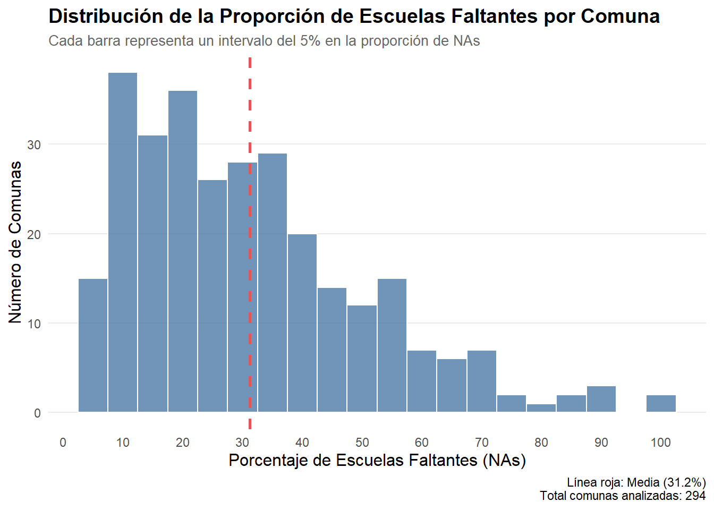
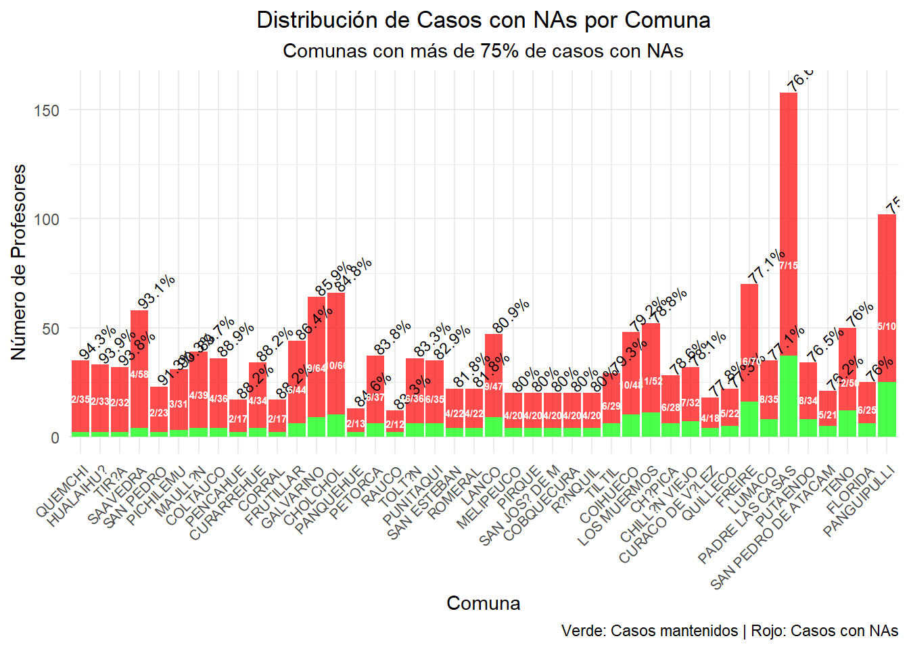
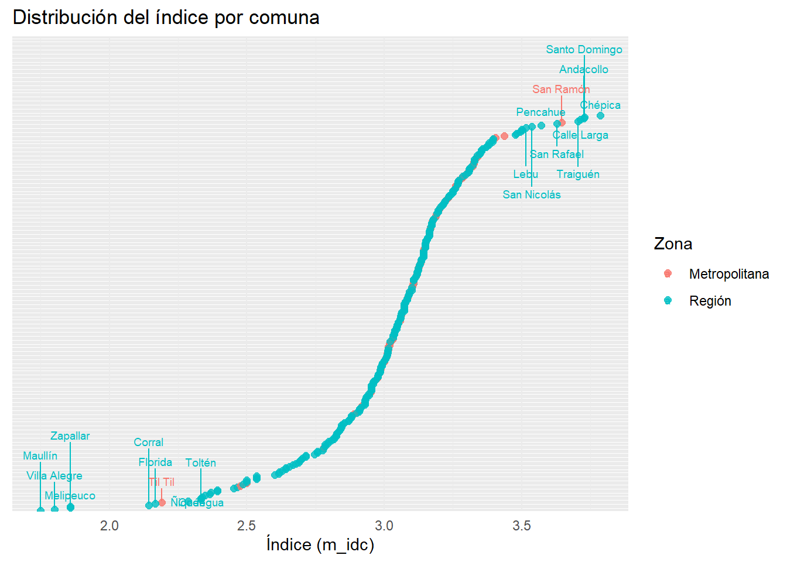
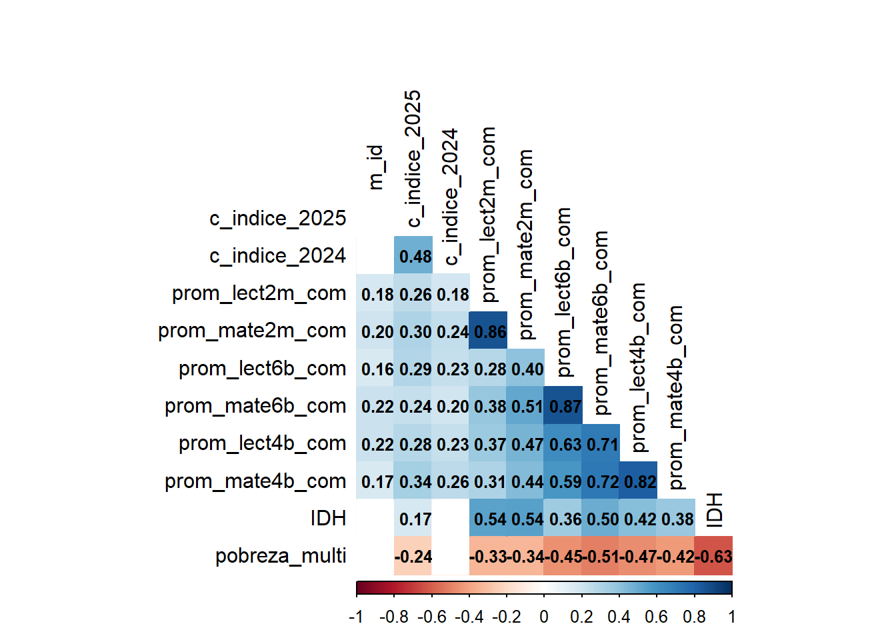
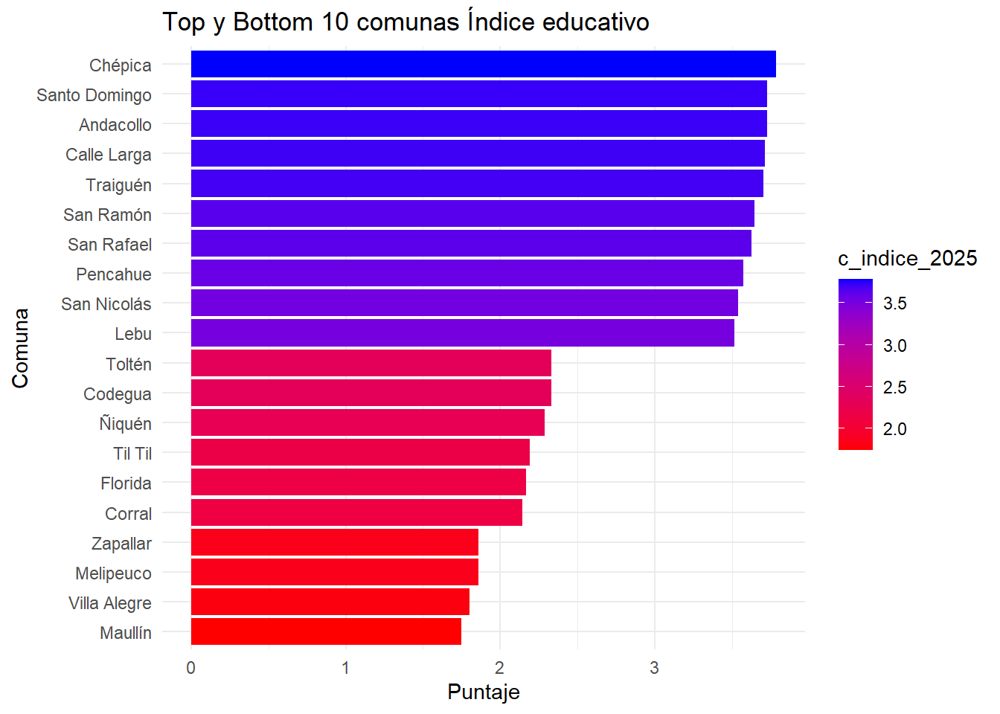
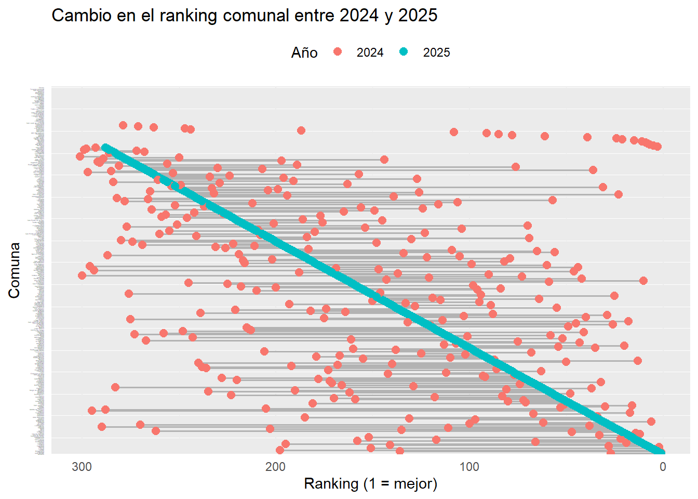
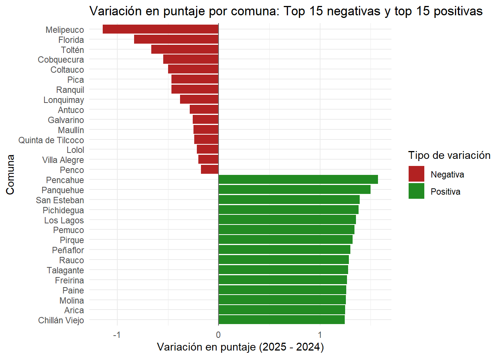
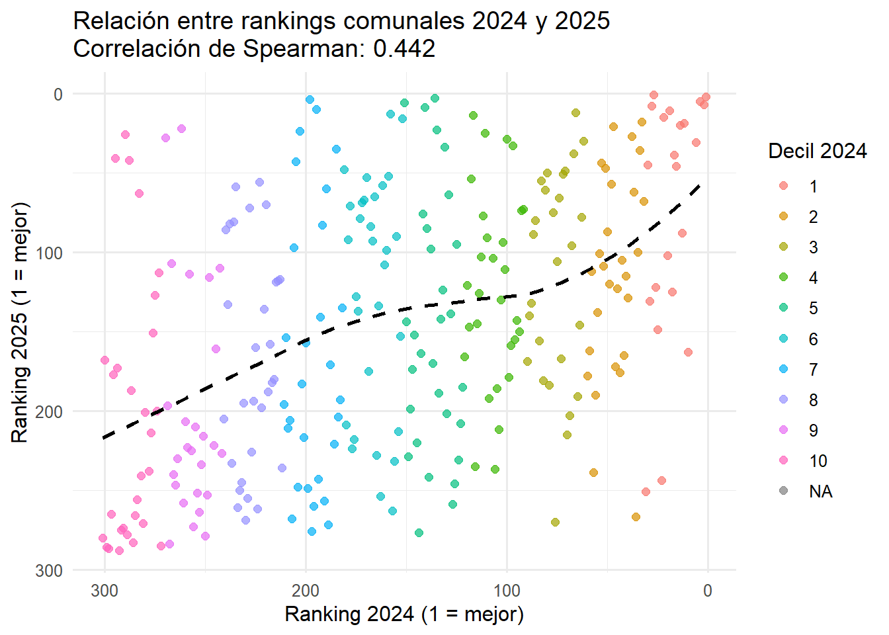

Bitácora de exploración del índice comunal de adopción digital escolar 2025
Datos del SIMCE 2024
Author
Nicolás Tobar
Published
August 11, 2025
1 Introducción
Objetivo: Este reporte contiene toda la información relacionada con la conformación de la dimensión educativa del índice de digitalización comunal del año 2025. Se trata de una especie de bitácora en que se exploran los datos del SIMCE utilizados y se anotan todas las decisiones que se tomaron para diseñar esta dimensión del proyecto.
Code
setwd(here::here()) # Establece WD a raíz del proyecto (idc/)print(getwd()) # Debe imprimir la ruta idc/
Para la primera versión del IDC de 2024 se utilizaron los datos del SIMCE 2023, contemplando los resultados de la batería de adopción digital en estudiantes de 4to básico y II° medio, y de los profesores de lenguaje y matemáticas. La base inicial de esa versión contemplaba más de 400.000 estudiantes y más de 20.000 profesores repartidos en más de 7.000 escuelas. Debido a los casos perdidos, 44 comunas no tenían información, por lo que se tuvo que trabajar con 301 comunas.
Para el índice educacional 2025 se trabajó con los datos de SIMCE 2024. Sin embargo, la batería de adopción digital no estaba disponible en estudiantes (A lo más algunas preguntas de violencia y uso del celular), solo en profesores. Aunque además de 4to básico y II° medio, también se sumaron datos de 6° básico. Para el caso de 2025 se trabajó solo con profesores de básica y media. La base inicial ―en bruto― contempla 25517 casos de profesores y 7710 escuelas.
El fraseo de los ítems se modificó levemente, aumentando sus detalles en 2025. Además se añadió un nuevo ítem relacionado a los protocolos con las TIC de la escuela.
En la ?@tbl-comparacion-baterias el usuario puede comparar las baterías usadas para el IDC 2024 y 2025
setwd(here::here()) # Establece WD a raíz del proyecto (idc/)read_excel("codebooks/c_educacion/2023_adopcion_digital.xlsx")|>kable(format ="html")
Table 1: bateria 2024
Profesores
cprof_p19_01
En relación con las tecnologías, ¿cuánto describen las siguientes situaciones al establecimiento?
El establecimiento entrega capacitaciones a sus funcionarios(as) para mejorar habilidades computacionales.
0: Vacío 1: No lo describe 2: Lo describe poco 3: Lo describe bastante 4: Lo describe completamente 99: Doble marca
Numérica
Profesores
cprof_p19_02
En relación con las tecnologías, ¿cuánto describen las siguientes situaciones al establecimiento?
Las y los profesionales del establecimiento se apoyan entre sí en caso de tener problemas asociados a la tecnología.
0: Vacío 1: No lo describe 2: Lo describe poco 3: Lo describe bastante 4: Lo describe completamente 99: Doble marca
Numérica
Profesores
cprof_p19_03
En relación con las tecnologías, ¿cuánto describen las siguientes situaciones al establecimiento?
El establecimiento se preocupa de que haya alguien a cargo de las herramientas tecnológicas.
0: Vacío 1: No lo describe 2: Lo describe poco 3: Lo describe bastante 4: Lo describe completamente 99: Doble marca
Numérica
Profesores
cprof_p19_04
En relación con las tecnologías, ¿cuánto describen las siguientes situaciones al establecimiento?
El establecimiento se preocupa constantemente de mejorar la infraestructura tecnológica.
0: Vacío 1: No lo describe 2: Lo describe poco 3: Lo describe bastante 4: Lo describe completamente 99: Doble marca
Numérica
Profesores
cprof_p19_05
En relación con las tecnologías, ¿cuánto describen las siguientes situaciones al establecimiento?
El establecimiento cuenta con internet rápido.
0: Vacío 1: No lo describe 2: Lo describe poco 3: Lo describe bastante 4: Lo describe completamente 99: Doble marca
Numérica
Profesores
cprof_p19_06
En relación con las tecnologías, ¿cuánto describen las siguientes situaciones al establecimiento?
El establecimiento cuenta con sala de tecnología equipada con computadores.
0: Vacío 1: No lo describe 2: Lo describe poco 3: Lo describe bastante 4: Lo describe completamente 99: Doble marca
Numérica
Profesores
cprof_p19_07
En relación con las tecnologías, ¿cuánto describen las siguientes situaciones al establecimiento?
Los computadores pueden ser utilizados por cualquiera que requiera información.
0: Vacío 1: No lo describe 2: Lo describe poco 3: Lo describe bastante 4: Lo describe completamente 99: Doble marca
Numérica
IIº Medio
cest_p27_01
¿Cuánto describen a tu colegio las siguientes afirmaciones?
En el colegio nos motivan a utilizar herramientas tecnológicas.
0: Vacío 1: No lo describe 2: Lo describe poco 3: Lo describe bastante 4: Lo describe completamente 99: Doble marca
Numérica
IIº Medio
cest_p27_02
¿Cuánto describen a tu colegio las siguientes afirmaciones?
Ocupamos la tecnología frecuentemente en el colegio para aprender.
0: Vacío 1: No lo describe 2: Lo describe poco 3: Lo describe bastante 4: Lo describe completamente 99: Doble marca
Numérica
IIº Medio
cest_p27_03
¿Cuánto describen a tu colegio las siguientes afirmaciones?
Para mis compañeros(as) es importante saber usar los computadores para aprender.
0: Vacío 1: No lo describe 2: Lo describe poco 3: Lo describe bastante 4: Lo describe completamente 99: Doble marca
Numérica
IIº Medio
cest_p27_04
¿Cuánto describen a tu colegio las siguientes afirmaciones?
Los profesores y profesoras nos enseñan a utilizar herramientas tecnológicas.
0: Vacío 1: No lo describe 2: Lo describe poco 3: Lo describe bastante 4: Lo describe completamente 99: Doble marca
Numérica
IIº Medio
cest_p27_05
¿Cuánto describen a tu colegio las siguientes afirmaciones?
En el colegio se preocupan de tener los computadores en buen estado.
0: Vacío 1: No lo describe 2: Lo describe poco 3: Lo describe bastante 4: Lo describe completamente 99: Doble marca
Numérica
IIº Medio
cest_p27_06
¿Cuánto describen a tu colegio las siguientes afirmaciones?
El colegio cuenta con internet de buena calidad.
0: Vacío 1: No lo describe 2: Lo describe poco 3: Lo describe bastante 4: Lo describe completamente 99: Doble marca
Numérica
4º básico
cest_p26_01
¿Cuánto describen a tu colegio las siguientes oraciones?
En el colegio nos motivan a utilizar herramientas tecnológicas.
0: Vacío 1: No lo describe 2: Lo describe poco 3: Lo describe bastante 4: Lo describe completamente 99: Doble marca
Numérica
4º básico
cest_p26_02
¿Cuánto describen a tu colegio las siguientes oraciones?
Ocupamos la tecnología frecuentemente en el colegio para aprender.
0: Vacío 1: No lo describe 2: Lo describe poco 3: Lo describe bastante 4: Lo describe completamente 99: Doble marca
Numérica
4º básico
cest_p26_03
¿Cuánto describen a tu colegio las siguientes oraciones?
Para mis compañeros y compañeras es importante saber usar los computadores para aprender.
0: Vacío 1: No lo describe 2: Lo describe poco 3: Lo describe bastante 4: Lo describe completamente 99: Doble marca
Numérica
4º básico
cest_p26_04
¿Cuánto describen a tu colegio las siguientes oraciones?
Los profesores y profesoras nos enseñan a utilizar tecnología.
0: Vacío 1: No lo describe 2: Lo describe poco 3: Lo describe bastante 4: Lo describe completamente 99: Doble marca
Numérica
4º básico
cest_p26_05
¿Cuánto describen a tu colegio las siguientes oraciones?
En el colegio se preocupan de tener los computadores en buen estado.
0: Vacío 1: No lo describe 2: Lo describe poco 3: Lo describe bastante 4: Lo describe completamente 99: Doble marca
Numérica
4º básico
cest_p26_06
¿Cuánto describen a tu colegio las siguientes oraciones?
El colegio cuenta con internet de buena calidad.
0: Vacío 1: No lo describe 2: Lo describe poco 3: Lo describe bastante 4: Lo describe completamente 99: Doble marca
Numérica
Code
setwd(here::here()) # Establece WD a raíz del proyecto (idc/)read_excel("codebooks/c_educacion/2024_adopcion_digital.xlsx")|>kable(format ="html")
Table 2: bateria 2025
Profesores
cdoce_p15_01
En relación con las tecnologías, ¿cuánto describen las siguientes situaciones al colegio?
El colegio entrega capacitaciones a sus funcionarios(as) para mejorar habilidades y conocimientos digitales.
0: Vacío 1: No lo describe 2: Lo describe poco 3: Lo describe bastante 4: Lo describe completamente 99: Doble marca
Numérica
Profesores
cdoce_p15_02
En relación con las tecnologías, ¿cuánto describen las siguientes situaciones al colegio?
Las y los profesionales del colegio se apoyan entre sí en caso de tener problemas con el uso pedagógico de la tecnología.
0: Vacío 1: No lo describe 2: Lo describe poco 3: Lo describe bastante 4: Lo describe completamente 99: Doble marca
Numérica
Profesores
cdoce_p15_03
En relación con las tecnologías, ¿cuánto describen las siguientes situaciones al colegio?
En el colegio se preocupan de que haya alguien a cargo de las herramientas tecnológicas.
0: Vacío 1: No lo describe 2: Lo describe poco 3: Lo describe bastante 4: Lo describe completamente 99: Doble marca
Numérica
Profesores
cdoce_p15_04
En relación con las tecnologías, ¿cuánto describen las siguientes situaciones al colegio?
En el colegio se preocupan constantemente de mejorar la infraestructura tecnológica.
0: Vacío 1: No lo describe 2: Lo describe poco 3: Lo describe bastante 4: Lo describe completamente 99: Doble marca
Numérica
Profesores
cdoce_p15_05
En relación con las tecnologías, ¿cuánto describen las siguientes situaciones al colegio?
El colegio cuenta con Internet estable y rápido.
0: Vacío 1: No lo describe 2: Lo describe poco 3: Lo describe bastante 4: Lo describe completamente 99: Doble marca
Numérica
Profesores
cdoce_p15_06
En relación con las tecnologías, ¿cuánto describen las siguientes situaciones al colegio?
Los equipos tecnológicos del colegio pueden ser utilizados para fines académicos por cualquier integrante de la comunidad educativa.
0: Vacío 1: No lo describe 2: Lo describe poco 3: Lo describe bastante 4: Lo describe completamente 99: Doble marca
Numérica
Profesores
cdoce_p15_07
En relación con las tecnologías, ¿cuánto describen las siguientes situaciones al colegio?
El colegio dispone de protocolos y reglamentos sobre el uso adecuado de las Tecnologías de la Información y la Comunicación (TIC).
0: Vacío 1: No lo describe 2: Lo describe poco 3: Lo describe bastante 4: Lo describe completamente 99: Doble marca
Numérica
3 Validación de la escala
La batería de adopción digital 2025 usada cuenta con un buen alpha (0.85), sin embargo hay un 41% de profesores que no contestan la pregunta.
Code
tab_itemscale(items)
Component 1
Row
Missings
Mean
SD
Skew
Item Difficulty
Item Discrimination
α if deleted
El establecimiento entrega capacitaciones a sus funcionarios(as) para mejorar habilidades computacionales.
41.48 %
2.41
0.97
0.19
0.60
0.59
0.84
Las y los profesionales del establecimiento se apoyan entre sí en caso de tener problemas asociados a la tecnología.
41.38 %
3.37
0.72
-0.88
0.84
0.54
0.84
El establecimiento se preocupa de que haya alguien a cargo de las herramientas tecnológicas.
41.38 %
3.49
0.77
-1.49
0.87
0.60
0.84
El establecimiento se preocupa constantemente de mejorar la infraestructura tecnológica.
41.56 %
2.93
0.96
-0.42
0.73
0.74
0.81
El establecimiento cuenta con internet rápido.
41.55 %
2.96
0.93
-0.48
0.74
0.59
0.84
El establecimiento cuenta con sala de tecnología equipada con computadores.
41.48 %
3.45
0.77
-1.3
0.86
0.63
0.83
Los computadores pueden ser utilizados por cualquiera que requiera información.
41.80 %
2.96
0.98
-0.52
0.74
0.65
0.83
Mean inter-item-correlation=0.457 · Cronbach's α=0.854
4 El problema de los casos perdidos
Tuvimos que explorar que estaba pasando a nivel de profesores, escuelas y comunas para entender si estos casos perdidos eran aleatorios o no.
4.0.1 Nivel profesores
Una vez que se desglosan los profesores con casos perdidos, se nota que se concentran en básica, pero que también hay en media. Por lo que se dictaminó que son aleatorios a nivel de profesores.
Code
stats_nivel_educativo <- docente %>%group_by(p_grado) %>%summarise(n_total =n(),n_NAs =sum(is.na(p_idc)),n_completos =sum(!is.na(p_idc)),prop_NAs = (n_NAs / n_total) *100,prop_completos = (n_completos / n_total) *100,.groups ='drop' ) %>%# Ordenar por proporción de NAsarrange(desc(prop_NAs))ggplot(stats_nivel_educativo, aes(x = prop_NAs, y =fct_reorder(p_grado, prop_NAs))) +geom_bar(stat ="identity", fill ="coral") +geom_text(aes(label =paste0(round(prop_NAs, 1), "% (", n_NAs, " / ", n_total, ")")), hjust =-0.1, size =3.5 ) +labs(title ="Proporción de valores faltantes (NAs) por nivel educativo del profesor",subtitle ="La etiqueta muestra % de NAs (casos con NA / total casos)",x ="% de valores faltantes",y ="Nivel educativo" ) +theme_minimal() +scale_x_continuous(expand =expansion(mult =c(0, 0.2))) +theme(plot.title =element_text(size =12),plot.subtitle =element_text(size =10) )
4.0.2 Nivel escuelas
De las 7.000 escuelas analizadas, más de 5.000 de ellas no tienen profesores que responden la batería. A nivel de escuela los datos no son fidedignos.
Code
# Creación variable cantidad de escuelas por comuna (pre limpiar NAs) -------docente <- docente %>%group_by(m_id) %>%mutate(n_escuelas_orig_comuna =n_distinct(c_id)) %>%ungroup()# 2. Creación de variable número y porcentaje de NAs por escuela ---------------escuelas_stats_na <- docente %>%# Agrupamos por el identificador único de la escuelagroup_by(c_id) %>%# Calculamos n y % de NAssummarise(c_name =first(c_name), n_escuela =n(),n_NAs_escuela =sum(is.na(p_idc)),.groups ='drop' ) %>%mutate(prop_NAs_escuela = (n_NAs_escuela / n_escuela) *100 ) %>%select(c_id, c_name, n_escuela, n_NAs_escuela, prop_NAs_escuela)escuelas_problematicas <- escuelas_stats_na %>%filter(prop_NAs_escuela >90)# Histograma con estilo profesionalggplot(escuelas_stats_na, aes(x = prop_NAs_escuela)) +geom_histogram(binwidth =5, fill ="#4E79A7", color ="white", alpha =0.8 ) +geom_vline(xintercept =mean(escuelas_stats_na$prop_NAs_escuela, na.rm =TRUE), color ="#E15759", linetype ="dashed", size =1 ) +labs(title ="Distribución de la Proporción de Valores Faltantes por Escuela",subtitle ="Cada barra representa un intervalo del 5% en la proporción de NAs",x ="Porcentaje de Valores Faltantes (NAs)",y ="Número de Escuelas",caption =paste0("Línea roja: Media (", round(mean(escuelas_stats_na$prop_NAs_escuela, na.rm =TRUE), 1), "%)\n","Total escuelas analizadas: ", nrow(escuelas_stats_na)) ) +scale_x_continuous(breaks =seq(0, 100, by =10)) +theme_minimal() +theme(plot.title =element_text(face ="bold", size =14),plot.subtitle =element_text(size =10, color ="gray40"),axis.title =element_text(size =12),panel.grid.minor =element_blank(),panel.grid.major.x =element_blank() )
Code
data.frame(Item =c("Total de escuelas", "Escuelas con 100% NA", "Atrición nivel escuela"),Valor =c(nrow(escuelas_stats_na)|>round(0),nrow(escuelas_problematicas)|>round(0), (nrow(escuelas_problematicas)/nrow(escuelas_stats_na))|>round(2)) )|>kable()
Item
Valor
Total de escuelas
7710.00
Escuelas con 100% NA
5057.00
Atrición nivel escuela
0.66
4.0.3 Nivel comunal
La distribución de profesores por comuna es más pareja. Hay un grupo de comunas con un 100% de profesores con casos perdidos, y luego la proporción va diminuyendo gradualmente.
Code
# Calcular proporción de NA por comunana_por_comuna <- docente |>group_by(m_id, m_name) |>summarise(total_docentes =n(),n_na =sum(is.na(p_idc)),prop_na = n_na / total_docentes,.groups ="drop" ) |>arrange(desc(prop_na))# Filtrar comunas con más de 75% de NAetiquetar <- na_por_comuna# Graficarggplot(na_por_comuna, aes(x =reorder(m_name, prop_na), y = prop_na)) +geom_col(color ="#F08080") +coord_flip() +scale_y_continuous(labels =percent_format(accuracy =1)) +labs(title ="Proporción de docentes sin índice por comuna",x =NULL,y ="% con NA en índice (p_idc)" ) +theme_minimal() +theme(axis.text.y =element_blank())
Las escuelas que se pierden por comuna siguen una distribución normal. La mayoría de las comunas pierden menos del 50% de las escuelas que tienen, por lo que a pesar de perder tantas escuelas, la información por comuna es más fidedigna.
Code
docentes_filtrado <- docente %>%filter(!c_id %in% escuelas_problematicas$c_id)# 5. Creación de variable cantidad y porcentaje de escuelas por comuna (luego de limpiar NAs)docentes_filtrado <- docentes_filtrado %>%group_by(m_id) %>%mutate(n_escuelas_post_filtro_comuna =n_distinct(c_id)) %>%ungroup()comunas_stats <- docentes_filtrado %>%# Agrupamos por el identificador único de la comunagroup_by(m_id) %>%# Rescatamos los valores y el nombre usando first()summarise(m_name =first(m_name), # Rescatamos el nombre de la comunan_escuelas_original =first(n_escuelas_orig_comuna),n_escuelas_mantenidas =first(n_escuelas_post_filtro_comuna),.groups ='drop' ) %>%# Calculamos el porcentaje de escuelas que se mantuvieronmutate(pct_escuelas_mantenidas = (n_escuelas_mantenidas / n_escuelas_original) *100 ) %>%# Reordenamos las columnas para mayor claridad (opcional)select(m_id, m_name, n_escuelas_original, n_escuelas_mantenidas, pct_escuelas_mantenidas)ggplot(comunas_stats, aes(x = pct_escuelas_mantenidas)) +geom_histogram(binwidth =5, fill ="#4E79A7", color ="white", alpha =0.8 ) +geom_vline(xintercept =mean(comunas_stats$pct_escuelas_mantenidas, na.rm =TRUE), color ="#E15759", linetype ="dashed", size =1 ) +labs(title ="Distribución de la Proporción de Escuelas Faltantes por Comuna",subtitle ="Cada barra representa un intervalo del 5% en la proporción de NAs",x ="Porcentaje de Escuelas Faltantes (NAs)",y ="Número de Comunas",caption =paste0("Línea roja: Media (", round(mean(comunas_stats$pct_escuelas_mantenidas, na.rm =TRUE), 1), "%)\n","Total comunas analizadas: ", nrow(comunas_stats)) ) +scale_x_continuous(breaks =seq(0, 100, by =10)) +theme_minimal() +theme(plot.title =element_text(face ="bold", size =14),plot.subtitle =element_text(size =10, color ="gray40"),axis.title =element_text(size =12),panel.grid.minor =element_blank(),panel.grid.major.x =element_blank() )

A partir de lo anterior, vale explorar qué está pasando en las comunas que pierden más de un 75% de casos a nivel individual. ¿Cuáles son las comunas con muchos casos perdidos? El gráfico las muestra en las etiquetas del eje X. En verde se muestra el n de profesores con valor, en rojo los que tienen NA. Sobre la barra se muestra el porcentaje de profesores con casos perdidos en la comuna.
Code
comunas_stats_NAs <- docente %>%group_by(m_id) %>%summarise(m_name =first(m_name),n_escuelas_orig_comuna =n_distinct(c_id),n_profesores_orig_comuna =n(),n_NAs_comuna =sum(is.na(p_idc)),prop_NAs_comuna = (n_NAs_comuna / n_profesores_orig_comuna) *100,casos_mantenidos = n_profesores_orig_comuna - n_NAs_comuna,etiqueta_prop =paste0(round(prop_NAs_comuna, 1), "%"),etiqueta_fraccion =paste0(casos_mantenidos, "/", n_profesores_orig_comuna),.groups ='drop' ) %>%select(m_id, m_name, n_profesores_orig_comuna, casos_mantenidos, n_NAs_comuna, prop_NAs_comuna, etiqueta_prop, etiqueta_fraccion) %>%arrange(desc(prop_NAs_comuna))library(ggtext)datos_grafico <- comunas_stats_NAs %>%filter(prop_NAs_comuna <100& prop_NAs_comuna >75)grafico_prop_nas <-ggplot(datos_grafico, aes(x =reorder(factor(m_id), -prop_NAs_comuna))) +# Barra verde para casos mantenidosgeom_col(aes(y = casos_mantenidos), fill ="green", alpha =0.7) +# Barra roja para casos con NA (apilada encima)geom_col(aes(y = n_NAs_comuna), fill ="red", alpha =0.7, position =position_nudge(y = datos_grafico$casos_mantenidos)) +# Añadir texto con proporción de NAsgeom_text(aes(y = n_profesores_orig_comuna +2, label = etiqueta_prop), size =3, angle =45, hjust =0) +# Añadir texto con fracción de casos mantenidos dentro de la barrageom_text(aes(y = n_profesores_orig_comuna /2, label = etiqueta_fraccion), size =2, angle =0, hjust =0.5, color ="white", fontface ="bold") +# Personalizar ejes y etiquetasscale_x_discrete(labels =setNames(datos_grafico$m_name, datos_grafico$m_id)) +labs(title ="Distribución de Casos con NAs por Comuna",subtitle ="Comunas con más de 75% de casos con NAs",x ="Comuna",y ="Número de Profesores",caption ="Verde: Casos mantenidos | Rojo: Casos con NAs" ) +theme_minimal() +theme(axis.text.x =element_text(angle =45, hjust =1, size =8),plot.title =element_text(hjust =0.5),plot.subtitle =element_text(hjust =0.5),legend.position ="none" )grafico_prop_nas

Con estos datos en mano se debe tomar una decisión. ¿Qué umbral de casos disponibles vamos a definir para darle alguna validez al índice? La siguiente tabla muestra los efectos de cada decisión posible.
Code
umbrales <-c(5, 10, 15, 20, 25)tabla_umbrales <-data.frame(umbral_casos =paste0(umbrales, "%"),numero_casos_mantenidos =sapply(umbrales, function(x) {sum(comunas_stats_NAs$prop_NAs_comuna < (100- x)) }))kable(tabla_umbrales,format ="html",col.names =c("Umbral de Casos", "Número de Casos Mantenidos"),caption ="Comunas mantenidas según umbral de casos válidos")
Comunas mantenidas según umbral de casos válidos
Umbral de Casos
Número de Casos Mantenidos
5%
294
10%
288
15%
281
20%
267
25%
249
4.0.4 Decisión sobre NA
Finalmente, se decidió eliminar de la versión definitiva todas las comunas que tuvieran igual o más de un 90% de profesores que no tuvieran valores perdidos en la batería. La base final quedó con 288 comunas. Se hizo un segundo script para depurar esta base (c2-proc-communal-level-data.R).
Code
setwd(here::here()) # Establece WD a raíz del proyecto (idc/)source("scripts/2025/c2-proc-communal-level.R")library(magrittr)id_validos <- c_educativo_2025%>%na.omit()%$% m_iddocente_filter <- docente%>%filter(!is.na(p_idc))%>%#Filtrar los casos que no tengan valores en idcfilter(m_id %in% id_validos) #Filtrar los casos de las comunas que tienen menos de 10% de profesores
Los N finales que se utilizaron son los siguientes
Un tercer script de procesamiento (c3-merge-long-data.R) fue confeccionado para unir la base de 2024 y 2025 del índice educativo. A partir de ello se hizo una comparación de la cantidad de comunas que se pierden y se ganan en cada medición. En la siguiente tabla se presenta tal información
Code
setwd(here::here()) # Establece WD a raíz del proyecto (idc/)source("scripts/2025/c3-merge-long-data.R")# Clasificar según presencia de NAresultado <- c_long %>%mutate(estado =case_when(is.na(c_indice_2024) &is.na(c_indice_2025) ~"NA en ambos años",is.na(c_indice_2024) &!is.na(c_indice_2025) ~"NA solo en 2024 (comuna ganada)",!is.na(c_indice_2024) &is.na(c_indice_2025) ~"NA solo en 2025 (comuna perdida)",TRUE~"Presente en ambos" ) )# Tabla resumentabla_resumen <- resultado%>% dplyr::count(estado)%>%bind_rows(tibble(estado ="Total de comunas 2024", n =303))%>%bind_rows(tibble(estado ="Total de comunas 2025", n =288))tabla_resumen|>kable()
estado
n
NA en ambos años
36
NA solo en 2024 (comuna ganada)
8
NA solo en 2025 (comuna perdida)
21
Presente en ambos
280
Total de comunas 2024
303
Total de comunas 2025
288
Para un mayor detalle, el usuario puede encontrar en la tabla a continuación el Estado de cada comuna que se gana o se pierde entre ambas versiones
Los valores del índice comunal educacional tiene una distribución similar a la del año pasado, donde los puntajes se acumulan en las posiciones intermedias-altas, y unos pocos casos se dispersan en los extremos, tanto altos como bajos. Además, de primera vista las comunas que obtienen los puestos más bajos y más altos tienden a ser los mismos.
Code
# Añadir variable "rm"idc_rm <- c_long %>%mutate(rm =ifelse(region_code ==13, "Metropolitana", "Región"))# Usar la misma base para top_bottomtop_bottom <- idc_rm %>%arrange(desc(c_indice_2025)) %>%slice_head(n =10) %>%bind_rows( idc_rm %>%arrange(c_indice_2025) %>%slice_head(n =10) )# Plotggplot(idc_rm, aes(x = c_indice_2025, y =reorder(nombre_comuna, c_indice_2025), color = rm)) +geom_point(size =2, alpha =0.8) +geom_text_repel(data = top_bottom,aes(label = nombre_comuna, color = rm), # <- importante: asegurar que el color esté también en esta capasize =2.5,max.overlaps =50,direction ="y" ) +labs(title ="Distribución del índice por comuna",x ="Índice (m_idc)",y =NULL,color ="Zona" ) +theme_minimal() +theme(axis.text.y =element_blank())

7 Correlación con otros índices
Para verificar que este comportamiento de los puntajes se corresponda con los resultados del año pasado, se compara la correlación entre ambos con otras correlacione del 2025. El índice educativo de 2024 tiene una correlación de 0.48 con el índice de 2025, siendo la más fuerte en relación con otros niveles de efecto, como los que tiene con diferentes puntajes SIMCE, el IDH o la proporción de pobreza multidimensional en la comuna.
Code
setwd(here::here()) # Establece WD a raíz del proyecto (idc/)#Importar otros datos comunales#SIMCEsimce_comuna_2m <-read.csv("data/raw_data/c_educativo/2024_2m_comuna.csv", sep =";")|>select(m_id = cod_com, prom_lect2m_com, prom_mate2m_com)simce_comuna_6b <-read.csv("data/raw_data/c_educativo/2024_6b_comuna.csv", sep =";")|>select(m_id = cod_com, prom_lect6b_com, prom_mate6b_com)simce_comuna_4b <-read.csv("data/raw_data/c_educativo/2024_4b_comuna.csv", sep =";")|>select(m_id = cod_com, prom_lect4b_com, prom_mate4b_com)#Otros índicesidh_comunal <-read_excel("data/raw_data/communal_index/2023_idh_comunal.xlsx")|>select(m_id = CODIGO, IDH)pobreza_multi_comunal <-read_excel("data/raw_data/communal_index/2022_pobreza_multi_comunal.xlsx")%>%select(m_id = Código, pobreza_multi=indice)# SIMCEidc_others <-merge(select(c_long,m_id=id_comuna, c_indice_2025,c_indice_2024), simce_comuna_2m, by ="m_id", all.x =TRUE)idc_others <-merge(idc_others, simce_comuna_6b, by ="m_id", all.x =TRUE)idc_others <-merge(idc_others, simce_comuna_4b, by ="m_id", all.x =TRUE)idc_others <-merge(idc_others, idh_comunal, by ="m_id", all.x =TRUE)idc_others <-merge(idc_others, pobreza_multi_comunal, by ="m_id", all.x =TRUE)corrplot(rcorr(as.matrix(idc_others))$r, p.mat =rcorr(as.matrix(idc_others))$P, method ='color', type ='lower', insig='blank',tl.col ="black",bg="white",na.label="-",addCoef.col ='black', number.cex =0.8, diag=FALSE)

8 Rankings
El valor de los puntajes entre los más altos y más bajos varía levemente. Tanto los primeros como últimos puestos pertenecen a comunas de corte rural y de poblaciones pequeñas.
Code
ranking_2025 <- c_long %>%arrange(c_indice_2025) %>%mutate(ranking_2025 =ifelse(is.na(c_indice_2025),NA,rank(c_indice_2025, ties.method ="first", na.last ="keep") ))# Filtrar comunas que comiencen con "c_", seleccionar top y bottom 10top_bottom_comunas <- ranking_2025 %>%arrange(desc(c_indice_2025)) %>%slice_head(n =10) %>%bind_rows( ranking_2025 %>%arrange(c_indice_2025) %>%slice_head(n =10) )# Gráficoggplot(top_bottom_comunas, aes(x =reorder(nombre_comuna, c_indice_2025), y = c_indice_2025, fill = c_indice_2025)) +geom_col() +coord_flip() +scale_fill_gradient(low ="red", high ="blue") +labs(title ="Top y Bottom 10 comunas Índice educativo",x ="Comuna",y ="Puntaje" ) +theme_minimal()

9 Movimiento de rankings 2024 y 2025
Respecto a una mirada general, se observa que varias comunas han cambiado bruscamente su posición, algunas han llegado a pasar de los primeros puestos a los últimos y viceversa.
Code
ranking_2025 <- c_long %>%arrange(c_indice_2025) %>%mutate(ranking_2025 =ifelse(is.na(c_indice_2025),NA,rank(c_indice_2025, ties.method ="first", na.last ="keep") ))ranking_2025_2024 <- ranking_2025%>%arrange(c_indice_2024)%>%mutate(ranking_2024 =ifelse(is.na(c_indice_2024),NA,rank(c_indice_2024, ties.method ="first", na.last ="keep") ))# Paso 1: Formato largocomunas_long <- ranking_2025_2024 %>%select(nombre_comuna, ranking_2024, ranking_2025) %>%pivot_longer(cols =starts_with("ranking_"),names_to ="anio",values_to ="ranking") %>%mutate(anio =recode(anio, ranking_2024 ="2024", ranking_2025 ="2025"),ranking =as.numeric(ranking) )# Paso 2: Crear orden para el eje Y (puede ser según ranking_2025)orden_comunas <- ranking_2025_2024 %>%arrange(ranking_2025) %>%pull(nombre_comuna)# Paso 3: Gráfico lollipop horizontalggplot(comunas_long, aes(x = ranking, y =factor(nombre_comuna, levels = orden_comunas), group = nombre_comuna)) +geom_line(color ="gray70", size =0.6) +geom_point(aes(color = anio), size =2.5) +scale_x_reverse() +# Ranking 1 a la izquierdalabs(title ="Cambio en el ranking comunal entre 2024 y 2025",x ="Ranking (1 = mejor)",y ="Comuna",color ="Año" ) +theme_minimal(base_size =11) +theme(axis.text.y =element_text(size =1),legend.position ="top" )

Sin embargo, ya sabemos que los puntajes varían bastante poco, y que del rango de 1 a 4 disponible en la batería, las comunas no superan del 2.5 a 4. Se hace necesario explorar las restas de puntajes con mayor magnitud entre 2024 y 2025. Las comunas no varían más de 1.5 puntos. Las comunas que sufren variaciones positivas son mucho más drásticas que las que bajan sus puntajes.
Code
# Primero identificamos las columnas que cumplen el patrón con grep y expresiones regularescols_2024 <-grep("item.*_2024$", names(c_long), value =TRUE)# Luego, creamos la nueva columna con la media fila por fila (rowMeans)c_long <- c_long %>%rowwise() %>%mutate(c_indice_2024 =as.integer(mean(c_across(all_of(cols_2024)), na.rm =TRUE)) ) %>%ungroup()c_long <- c_long%>%mutate(resta_puntaje = c_indice_2025 - c_indice_2024)# Top 15 variaciones negativastop15_neg <- c_long %>%arrange(resta_puntaje) %>%slice_head(n =15) %>%mutate(tipo ="Negativa")# Top 15 variaciones positivastop15_pos <- c_long %>%arrange(desc(resta_puntaje)) %>%slice_head(n =15) %>%mutate(tipo ="Positiva")# Unir y ordenar factor para eje Ytop30 <-bind_rows(top15_neg, top15_pos) %>%mutate(nombre_comuna =factor(nombre_comuna, levels =rev(unique(nombre_comuna))))# Gráficoggplot(top30, aes(x = resta_puntaje, y = nombre_comuna, fill = tipo)) +geom_col() +geom_vline(xintercept =0, color ="gray40") +scale_fill_manual(values =c("Negativa"="firebrick", "Positiva"="forestgreen")) +labs(title ="Variación en puntaje por comuna: Top 15 negativas y top 15 positivas",x ="Variación en puntaje (2025 - 2024)",y ="Comuna",fill ="Tipo de variación" ) +theme_minimal(base_size =11)

El ranking comunal cambia considerablemente entre 2024 y 2025 (confirmado por la correlación 0.442 y agrupación por deciles). Sin embargo, hay excepciones con movimientos poco significativos.
Code
library(ggplot2)library(dplyr)# Aseguramos que tienes las columnas decil_2024 y decil_2025 ya creadas, si no, las creamosranking_2025_2024 <- ranking_2025_2024 %>%mutate(decil_2024 =ntile(ranking_2024, 10),decil_2025 =ntile(ranking_2025, 10) )# Calcular correlación de Spearmancor_spearman <-cor(ranking_2025_2024$ranking_2024, ranking_2025_2024$ranking_2025, method ="spearman", use ="complete.obs")# Plotggplot(ranking_2025_2024, aes(x = ranking_2024, y = ranking_2025, color =factor(decil_2024))) +geom_point(alpha =0.7, size =2) +geom_smooth(method ="loess", se =FALSE, color ="black", linetype ="dashed") +scale_x_reverse() +# Ranking 1 a la izquierdascale_y_reverse() +# Ranking 1 arribalabs(title =paste0("Relación entre rankings comunales 2024 y 2025\nCorrelación de Spearman: ", round(cor_spearman, 3)),x ="Ranking 2024 (1 = mejor)",y ="Ranking 2025 (1 = mejor)",color ="Decil 2024" ) +theme_minimal(base_size =12) +theme(legend.position ="right")

Por si quedan dudas sobre lo que está pasando en las posiciones más altas y más bajas, se entrega el detalle de esta tabla que muestra a las primeras y últimas quince comunas de 2025 y la posición que ocupan en 2024.